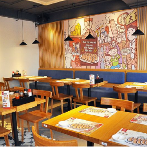

TINH HOA ẨM THỰC NHẬT BẢN
Ẩm thực Nhật Bản không lạm dụng quá nhiều gia vị mà chú trọng làm nổi bật hương vị tươi ngon, tinh khiết tự nhiên của món ăn.200Hương vị món ăn Nhật thường thanh tao, nhẹ nhàng và phù hợp với thiên nhiên từng mùa.
BỮA TRƯA CHUẨN VỊ NHẬT
Bữa trưa tại Sushi Kei không chỉ là sự lựa chọn cho việc “ăn gì trưa nay” mà còn tạo dựng không gian thoải mái cho thực khách..
Các Set Lunch đa dạng từ sashimi, cá hồi, cá nướng, thịt hảo hạng cùng với cơm, súp miso, salad,... đáp ứng nhu cầu đa dạng của thực khách.
Trong thành phần của Set Lunch, lượng rau củ, cá được tính toán cẩn thận không chỉ đảm bảo đem đến cho thực khách bữa trưa ngon miệng, nhanh chóng mà còn cung cấp đầy đủ chất dinh dưỡng, năng lượng cho buổi chiều làm việc hiệu quả.

KHÔNG GIAN
Không gian kết hợp giữa truyền thống và hiện đại nhưng vẫn mang tới cho thực khách cảm giác đậm chất Nhật Bản. Từ những trang trí trần nhà hàng đến thiết kế quầy bar, bếp luôn phải lịch sự
BẾP TRƯỞNG
Các món ăn của bếp trưởng Chiba chinh phục mọi giác quan bởi hương vị đậm chất Nhật Bản cùng cách bài trí tỉ mỉ, tinh tế và gói trọn cả tình yêu với nghề của người đầu bếp.

PHỤC VỤ
Để có thể nâng cao chất lượng phục vụ, hoàn thiện dịch vụ và mang đến cho khách hàng những trải nghiệm tốt nhất. Các tiêu chuẩn nhân viên phục vụ nhà hàng là điều rất quan trọng cần phải nắm bắt.
Món Ăn Đặc Trưng

Yakitori

Shabu-Shabu

Sushi

U Don

Sa Ke
Soba

Sukiya

Ramen
THÔNG TIN LIÊN HỆ
028 3899 1373
sushinigiri@gmail.com
www.sushinigiri.com
02-võ oanh-phường 25-quận bình thạnh